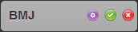
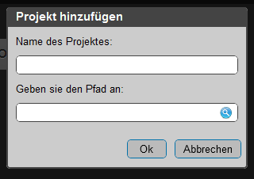
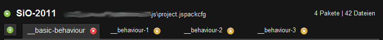
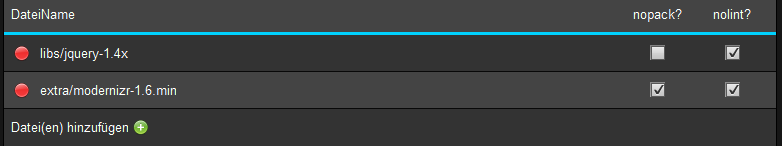
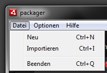
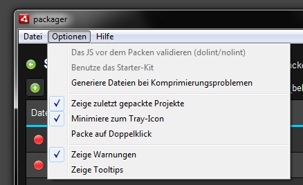
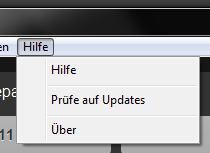
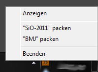
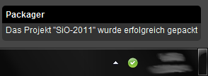

Diese Hilfe bietet eine kurze und rudimentäre Einführung in die Handhabung des Packagers. Sie ist nicht sonderlich ausführlich. Es sollte aber keinesfalls so sein, dass man an einer Stelle nicht weiß, was man zu machen hat bzw. was man machen kann, oder wie man was macht.
Falls Fragen offen bleiben sollten, einfach zu mir (Philipp) kommen.
Wähle links einen Bereich aus, zu dem du Erläuterungen haben möchtest.
Ein Projekt in der Übersicht sieht meist so aus.
Es ist auf den erstem Moment nicht viel sichtbar, außer der Projekt-Name.
Wenn man dann aber darüber hovert sieht es folgendermaßen aus:
 Dann sieht man plötzlich drei Buttons.
- Der erste (lila) zum konfigurieren des Projekts (siehe Detailansicht)
- Der zweite (grün) ist zum direkten Packen des Projekts
- Der dritte (rot) löscht das Projekt
(HINWEIS: Er löscht das Projekt lediglich aus der Übersicht. Nicht jedoch von der Festplatte !!)
Im oberen Bereich der Übersicht befindet sich ein Container mit den ( 4! ) zuletzt gepackten Projekten.
In dem Bereich sind die Buttons schon in einem sichtbaren Zustand.
So dass man schneller den Knopf drücken kann, den man gerne drücken möchte
Wenn man dieses Feature nicht möchte, so kann es deaktivieren (siehe: Das Menü -> Optionen
In der unteren rechten Ecke findet man einen Button zum Erstellen eines neuen Projektes.
Wenn man den Button drückt erscheint ein Dialog, mit dem man dann ein neues Projekt erstellen kann.
In diesem Dialog gibt man dann den Projektnamen und den Speicherort der Config-Datei an, und schon erstellt der Packager eine
Datei namens project.jspackcfg in dem Ordner.
Es ist zu beachten, dass der Ordner den man auswählt immer der oberste Ordner in der OrdnerStruktur des Javascriptes sein muss.
Denn es lassen sich nur JS-Dateien aus dem selben Ordner oder Unterordnern des Packagers hinzufügen.
ACHTUNG:
Dieser Dialog dient ausschließlich zum erstellen von neuen Projekten. Er importiert keine. Dazu bitte Drag and Drop oder aber
Import verwenden.
Es ist wie es sich anhört. Wenn man in der Übersichts-Ansicht ist, kann man einfach per Drag and Drop config-Dateien in den Packager importieren. Diese Möglichkeit besteht AUSCHLIESSLICH in der Übersichts-Ansicht. Es ist nicht möglich in der Detailansicht Projekte zu importieren.

Erläuterung, was hier zu sehen ist:
Oben links in der Ecke sehen wir den Paketnamen. Direkt links daneben befindet sich der Knopf, der uns wieder zurück zur Übersicht bringt.
Rechts neben dem Projektnamen finden wir den Projektpfad wieder. Dieser ist klickbar, und öffnet den Ordner mit dem Datei-Browser.
Ganz oben rechts befindet sich nur so zur Info, eine Anzeige, wieviel Pakete und wieviel Dateien sich innerhalb des Projektes befinden.
Direkt unter der Top-Leiste sind dann die Paket-Tabs.
Diese zeigen an, wieviele Pakete sich innerhalb des Projektes befinden.
Es gibt einen besonders hevorstechenden Tab. Das ist der ganz links und ermöglicht es ein neues Paket hinzuzufügen.
Die Paket-Tabs haben darüberhinaus noch 1-2 zusätzliche Buttons.
der rote löscht ein paket. ( er ist bei aktiven tabs immer sichtbar, bei inaktiven nicht außer bei hover )
der gelbe button ist dafür da, ob das Paket mit dem "small-Loader" geladen werden soll oder nicht. Soll heißen, ob es dann
in der website ein Paket gibt, welches sich um den devloader kümmert.
Da das erste Paket eines Projektes immer mit dem devloader kommt, geht es an der Stelle nur darum, ob es ein Paket ist, welches gänzlich allein, oder aber
immer mit dem ersten zusammen eingebunden wird.
Beispiel:
"__basic-behaviour" und "_ie6-behaviour".
Da ist es so, dass die ie6-behaviour immer zusätzlich eingebunden wird.
An der Stelle kümmert sich die "__basic-behaviour" um den devloader, und für die "_ie6-behaviour" würde "small-Loader" reichen.

Wie der Name sagt, ist dies der Bereicht für die einzelnen Dateien in dem ausgewählten Paket.
Sie sind tabellarisch sortiert. So, dass es die Möglichkeit gibt "per-file" Änderungen vorzunehmen, bzw. Paket-spezifische Änderungen.
Es ist möglich für jede Datei die Optionen "nolint" bzw. "nopack" zu setzen.
Desweiteren ermöglicht es der rote Button die Datei aus dem Paket zu entfernen.
Um die Reihenfolge der Dateien zu ändern, ist es möglich einfach per Drag & Drop die einzelne Datei an eine andere Stelle zu ziehen.
Als letzter Eintrag in der Tabelle, gibt es einen besonderen Punkt.
Es ist der Punkt "Datei(en) hinzufügen, der im Grunde genau das macht was man erwartet.
Es findet jedoch eine Kontrolle statt, ob die Datei schon in dem Paket vorhanden ist.
Dieser Knopf startet den Vorgang des Packens. Dabei ist die Logik relativ klar.
Es werden die Dateien eines Paketes genommen, komprimiert und dann in eine Datei geschrieben, die so heißt wie das Paket und in dem Projekt-Ordner liegt.

| Bezeichner | Funktion |
|---|---|
| Neu | erstellt ein neues Projekt |
| Importieren | ermöglicht es ein bestehendes Projekt zu importieren |
| Beenden | beendet das Programm |

| Bezeichner | Funktion |
|---|---|
| Generiere Dateien bei Komprimierungsproblemen | Wenn ausgewählt, erstellt der Pack-Prozess automatisch neben den fertigen JavaScripten noch zusätzliche Dateien, die die Fehler-Meldungen des Closure-Compilers enthalten |
| Zeige zuletzt gepackte Projekte | Schaltet die entsprechende Box in der Übersicht an oder aus |
| Minimiere zum Tray | Wählt aus, ob das Fenster beim Minimieren verschwinden soll, oder nicht |
| Packe auf Doppelklick | Wählt aus, ob ein Projekt gepackt werden soll, oder ob man zu den Details kommt, wenn man auf ein Projekt in der Übersicht doppelt klickt. |
| Zeige Warnungen | Legt fest ob Warnungen vor dem Löschen von Paketen oder Dateien angezeigt werden sollen |
| Zeige Tooltips | Legt fest, ob Tooltips angezeigt werden sollen oder nicht. |

| Bezeichner | Funktion |
|---|---|
| Hilfe | Zeigt diese Hife an |
| Prüfe auf Updates | Prüft, ob eine neue Version verfügbar ist |
| Über | Zeigt kleine Hintergrund-Infos |

Das Tray-Menü ermöglicht es nicht nur, die Anwendung nach Vorne zu bringen bzw. zu beenden.
Man kann ebenfalls über das Menü "Schnell-Packen".
Das heißt, ohne die Anwendung in den Vordergrund holen zu müssen, oder die Config-Datei doppelt
zu klicken, kann man ein Paket packen. sobald man das macht, springt das Fenster auch NICHT wieder in den
Vordergrund sonder zeigt Benachrichtigungen. (siehe unten)

Sobald der Packager agiert d.h. anfängt zu packen / packt / fertig gepackt hat, und das eigentliche
Anwendungsfenster ist nicht sichtbar, dann werden Benachrichtigungen gezeigt.
Das passiert auch, wenn Fehler auftreten sollten.